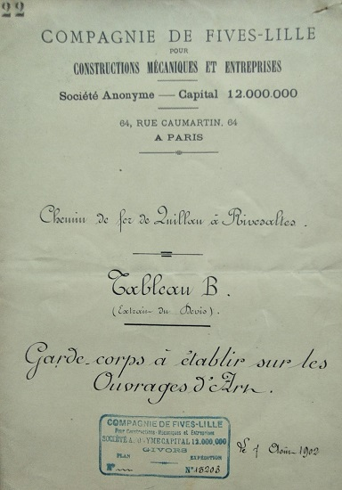
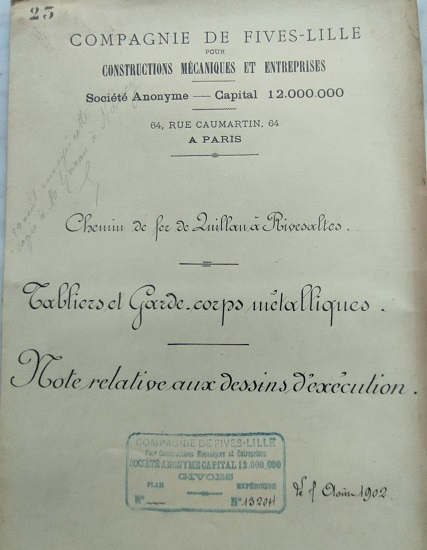
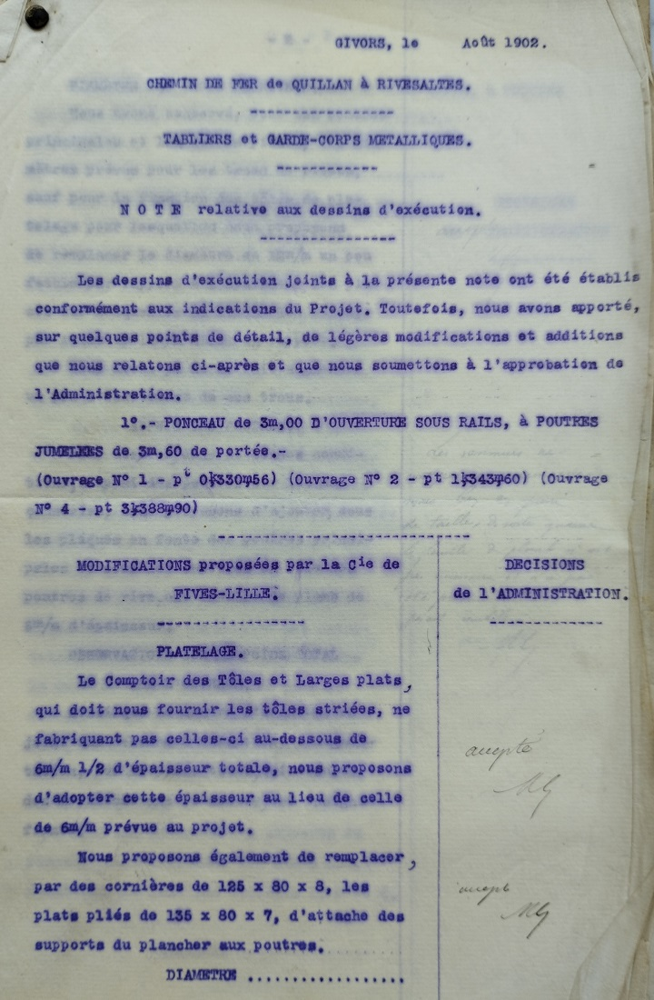
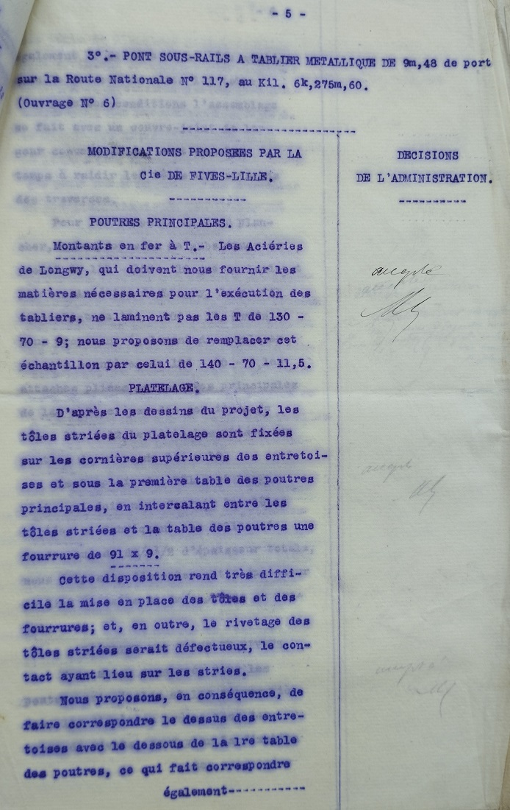
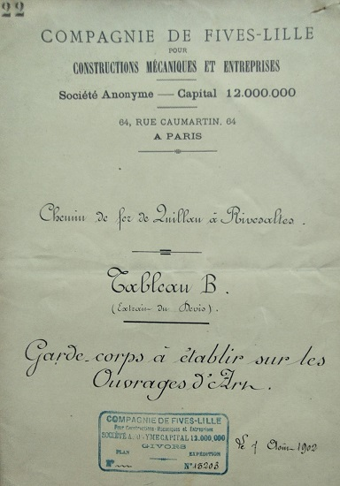
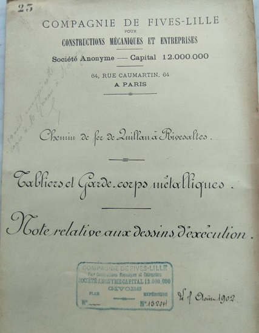
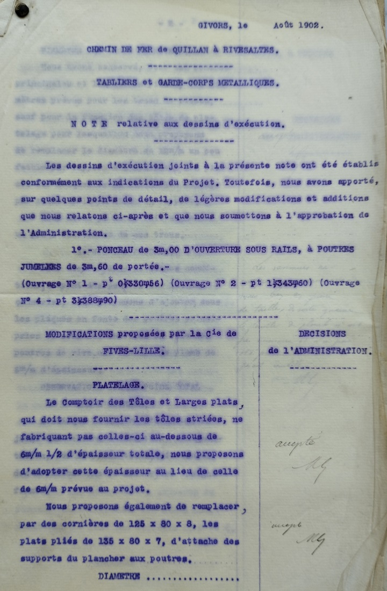
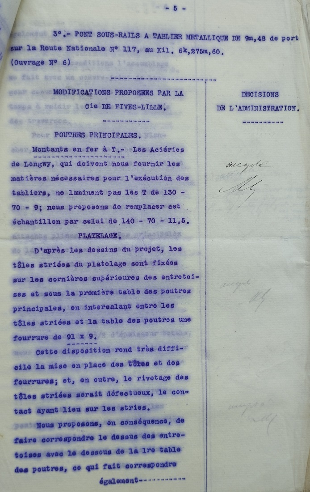
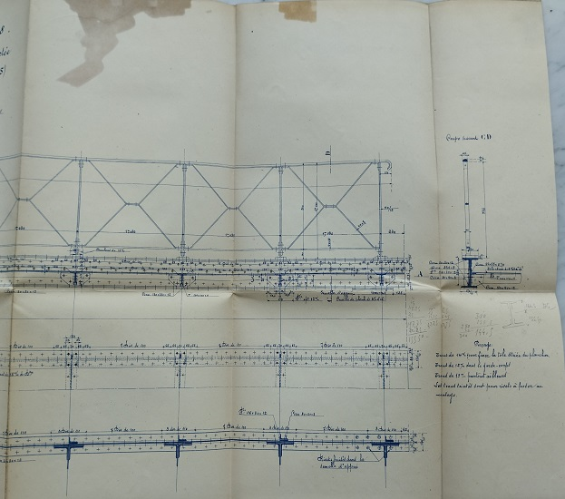
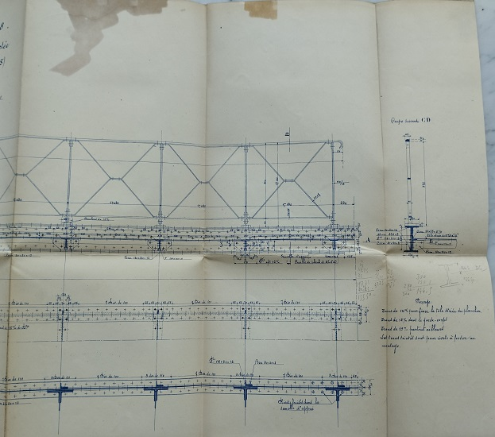

Pour alléger la page sur l'historique de voie ferrée, je crée cette annexe avec les informations collectées aux archives départementales de Carcassonne sur les gardes corps métalliques à établir sur les ouvrages en maçonnerie de la partie audoise de la ligne
 cliquer sur l'image pour une meilleure définition
cliquer sur l'image pour une meilleure définition


 Certaines images ci-dessous sont cliquables pour agrandir
Certaines images ci-dessous sont cliquables pour agrandir


 









 
